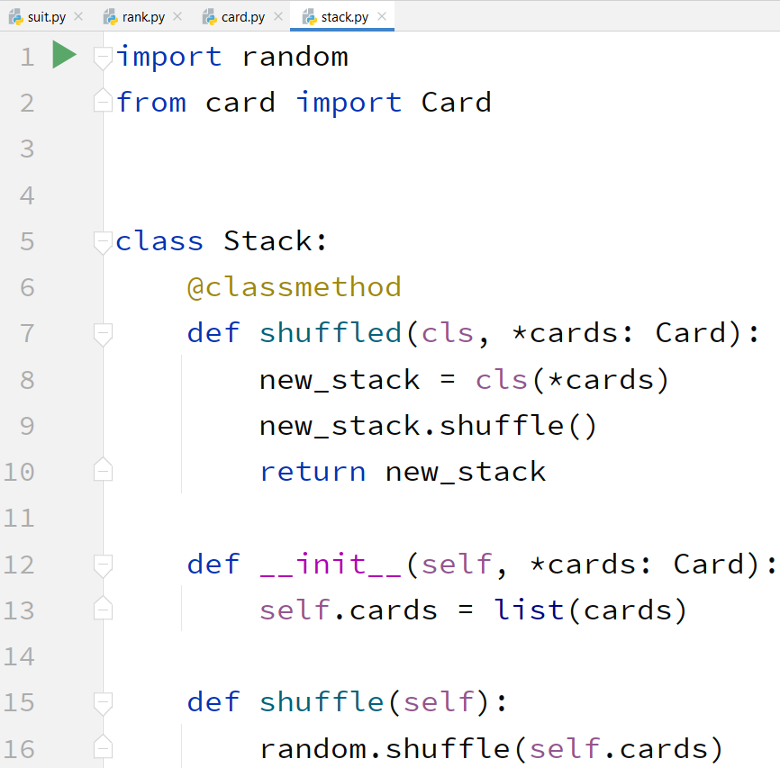
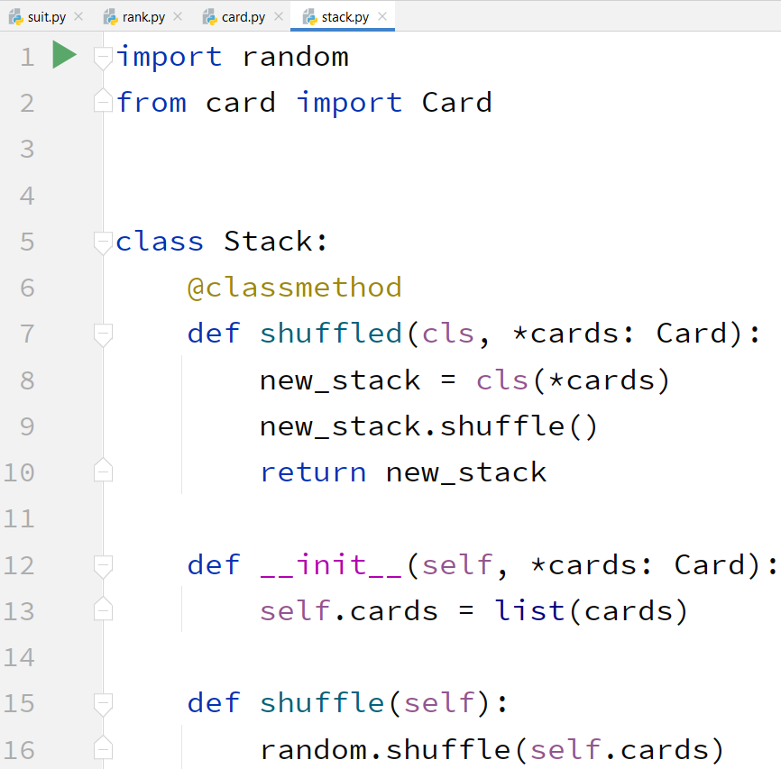

Семинар 4: карты
Реализуем объектную модель для карточных игр!
Модель данных
1. Создайте класс "масть" (Suit), и четыре объекта для четырёх мастей
2. Создайте класс "достоинство" (Rank), и девять объектов для всех типов достоинства
 3. Создайте класс "карта" (Card), который объединит в себе масть и достоинство
4. Создайте класс "стопка" (Stack), который будет держать упорядоченный набор карт. Набор карт может быть по умолчанию перемешан.

5. Переопределите методы __str__ во всех классах и создайте тесты, распечатывающие разные виды карт и стопок карт
На картинке ниже приведены тесты для разных классов и требуемые результаты:
3. Создайте класс "карта" (Card), который объединит в себе масть и достоинство
4. Создайте класс "стопка" (Stack), который будет держать упорядоченный набор карт. Набор карт может быть по умолчанию перемешан.

5. Переопределите методы __str__ во всех классах и создайте тесты, распечатывающие разные виды карт и стопок карт
На картинке ниже приведены тесты для разных классов и требуемые результаты:
Игра
6. Вспомним простую игру "Пьяница"
*) играют начиная с 2 игроков со стандартной колодой
*) все карты случайно разделены поровну между всеми игроками
остаточные карты сбрасываются
*) игроки по очереди кладут карты с верха своих стопок на стол
*) чья карта в итоге старше, тот забирает все положенные карты
@) побеждает игрок, избавившийся от всех карт
В новом раунде заново кладутся карты и определяется старший среди новых карт (старые уже не играют).
Новый раунд повторяется пока не будет единственный победитель.
Он забирает все карты, добавляя их в свою стопку снизу
*) побеждает игрок с самым большим числом карт
7. Подумайте о функционале игры. Какие процедуры должны выполняться по отношению к объектной модели?
8. Реализуйте класс "Пьяница" (DrunkCard), который создаётся с заданным числом игроков и заданной изначальной колодой кард (стопкой) и проводит игру по правилам. Все ходы должны печататься на экран.
-----------------------------
ДОПОЛНИТЕЛЬНЫЙ МАТЕРИАЛ
-----------------------------
Вторая игра
9. Вспомним игру "Француский дурак" (Упрощённое Uno)
*) играют начиная с 2 игроков, игроки располагаются в циклической очереди
*) игрокам выдаётся по 5 карт с верха начальной колоды, остальная колода лежит стопкой
*) игроки кладут карты в новую (изначально пустую) стопку
*) класть карты можно по следующим правилам:
@) класть можно масть на масть, достоинство на достоинство или даму на что угодно
@) когда кладётся дама, заказывается масть (и дальше можно положить эту масть или даму)
@) если кладётся туз, 6 или 7 - следующий игрок пропускает ход
@) если кладётся 6 - следующий игрок берёт карту из стопки
@) если кладётся 7 - следующий игрок берёт две карты из стопки
@) при окончании стопки, берутся карты из новой стопки и перемешиваются (и это теперь новая стопка)
@) побеждает игрок, избавившийся от всех карт
10. Подумайте, какой функционал требуется реализовать на объектной модели (с учётом уже реализованного для "пьяницы")
11. Реализуйте класс FrenchDumb, который создаётся с заданным числом игроков и заданной изначальной колодой кард (стопкой) и проводит игру по правилам. Перед каждым ходом должна печататься рука текущего игрока, информация о том у кого сколько кард, а так же последняя карта на поле. Игрок может ввести одно число - номер карты в его руке, которой он ходит. Если это дама, то игрок вводит второе число - заказанную масть.